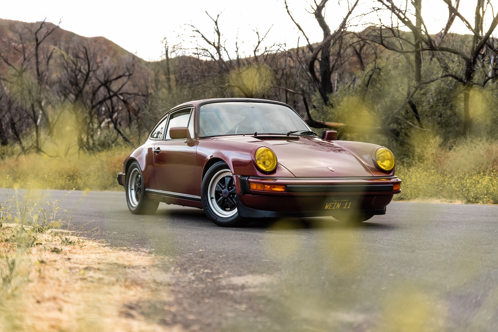

Porsche on vuosia tarjonnut konsultointipalveluita muille autovalmistajille. Niitä ovat käyttäneet muiden muassa Studebaker, SEAT, Daewoo ja Subaru. Porschen päämaja ja päätehdas sijaitsevat edelleen Stuttgartin Zuffenhausenissa, mutta Cayenne- ja Carrera GT -malleja varten on uusi tehdas Leipzigissä.[1] Valmet Automotive Uudessakaupungissa valmisti suurimman osan Porschen Boxster- ja Cayman-malleista 2012 saakka.[2][3]

Porschen mallisto: